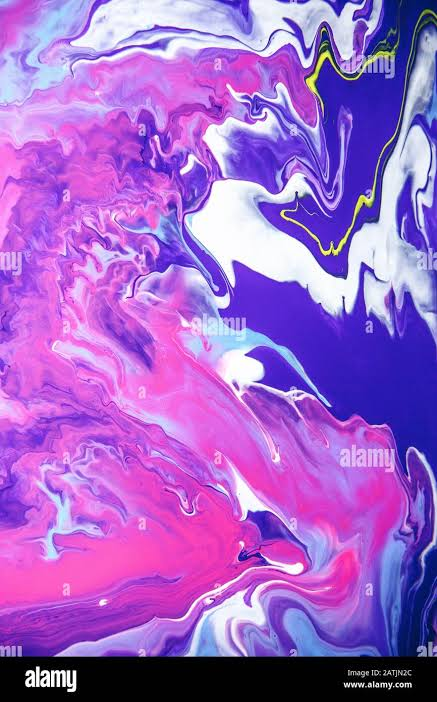

Christ Dadjo
Je suis Christ (christ-ph), développeur full-stack web.
Je code depuis environ 2 à 3 ans, et au fil de mes projets j'ai exploré plusieurs briques du développement web — Python/Flask côté backend, JavaScript et Vue.js côté frontend, avec les bases HTML/CSS. Cette diversité m'a permis de comprendre comment une application web fonctionne de bout en bout, du serveur à l'interface.